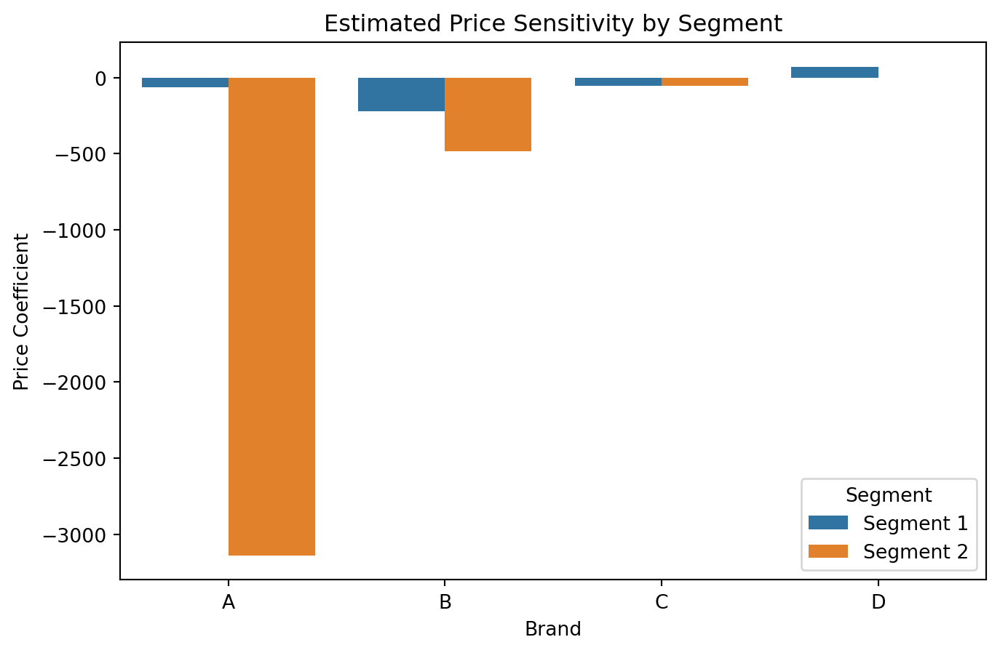
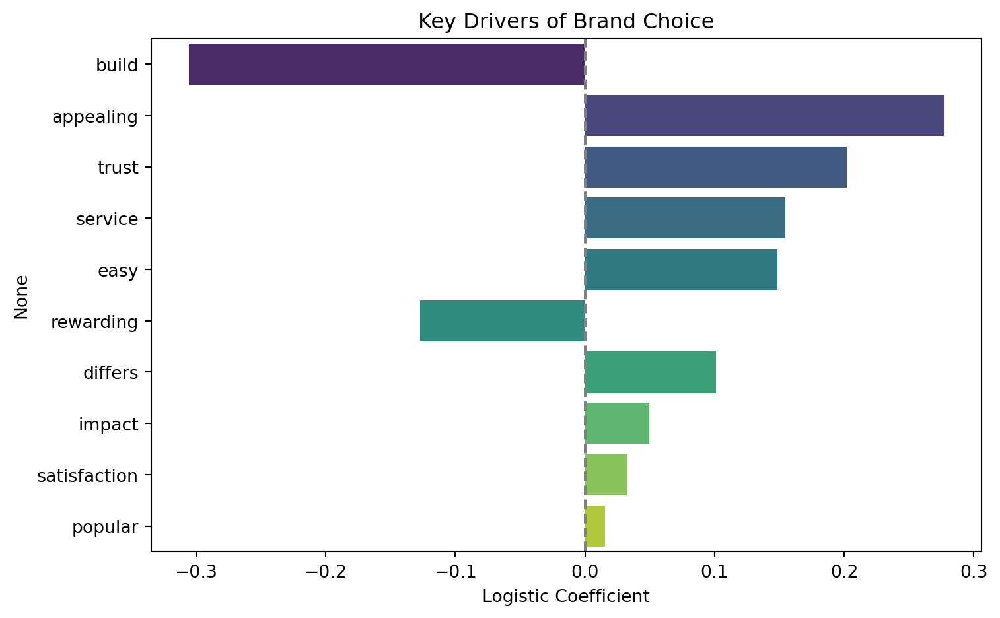
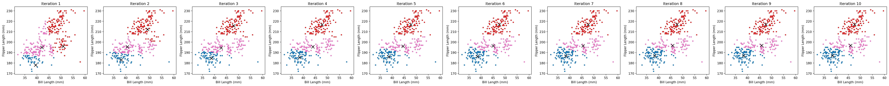
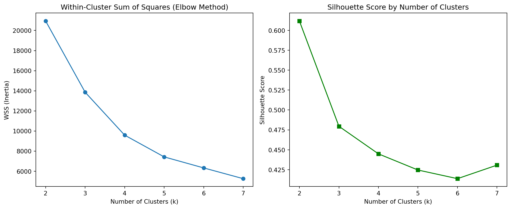

import pandas as pd
import numpy as np
from scipy.special import softmax
from scipy.optimize import minimize
import matplotlib.pyplot as plt
import seaborn as sns
df = pd.read_csv("yogurt_data.csv")
brands = ['A', 'B', 'C', 'D']
purchase_cols = ['y1', 'y2', 'y3', 'y4']
price_cols = ['p1', 'p2', 'p3', 'p4']
df['total'] = df[purchase_cols].sum(axis=1)
df = df[df['total'] > 0].copy()
df = df.sample(n=50, random_state=42).copy()
for brand, col in zip(brands, purchase_cols):
df[f'choice_{brand}'] = df[col] / df['total'] Add Title
X_price = df[price_cols].values
Y_share = df[[f'choice_{b}' for b in brands]].values
def stable_softmax(x):
x = x - np.max(x)
exps = np.exp(x)
return exps / np.sum(exps)
def unpack_params(params):
intercepts = np.array(params[:8]).reshape(2, 4)
price_coefs = np.array(params[8:]).reshape(2, 4)
return intercepts, price_coefs
def latent_class_loglike(params):
intercepts, price_coefs = unpack_params(params)
log_likelihood = 0
eps = 1e-10
for i in range(len(df)):
segment_logprobs = []
for s in range(2):
utilities = intercepts[s] + price_coefs[s] * X_price[i]
probs = stable_softmax(utilities)
logprob = np.sum(Y_share[i] * np.log(probs + eps))
segment_logprobs.append(np.log(0.5) + logprob)
max_log = np.max(segment_logprobs)
log_likelihood += max_log + np.log(np.sum(np.exp(np.array(segment_logprobs) - max_log)))
return -log_likelihoodnp.random.seed(42)
init_params = np.random.normal(loc=0.0, scale=0.1, size=16)
res = minimize(latent_class_loglike, init_params, method="BFGS", options={"maxiter": 500})
print("Convergence：", res.success)
print("Final negative log-likelihood：", res.fun)
intercepts, price_coefs = unpack_params(res.x)
results = pd.DataFrame({
"Brand": brands * 2,
"Segment": ["Segment 1"] * 4 + ["Segment 2"] * 4,
"Intercept": intercepts.flatten(),
"PriceCoef": price_coefs.flatten()
})Convergence： False
Final negative log-likelihood： 44.71326072156327plt.figure(figsize=(8,5))
sns.barplot(data=results, x="Brand", y="PriceCoef", hue="Segment")
plt.title("Estimated Price Sensitivity by Segment")
plt.ylabel("Price Coefficient")
plt.show()
Latent-Class MNL Analysis (50-sample demonstration)
We estimated a simplified latent-class multinomial logit model using a 50-observation subsample of yogurt choice data to improve computational tractability during development. The model assumes two hidden consumer segments with differing price sensitivities across four yogurt brands.
As shown in the barplot above: - Segment 1 and Segment 2 both exhibit strong negative price sensitivity for Brand A, suggesting a general aversion to high prices for that brand. - Sensitivity toward Brands B, C, and D is weaker and more similar across segments. - The segment structure captures heterogeneity in consumer valuation of price, in line with Kamakura & Russell (1989)’s approach to market segmentation.
This demonstration highlights the interpretability and flexibility of latent-class choice models, even under reduced sample conditions.
import pandas as pd
df = pd.read_csv("data_for_drivers_analysis.csv")
print(df.shape)
print(df.columns)
df.head()(2553, 12)
Index(['brand', 'id', 'satisfaction', 'trust', 'build', 'differs', 'easy',
'appealing', 'rewarding', 'popular', 'service', 'impact'],
dtype='object')| brand | id | satisfaction | trust | build | differs | easy | appealing | rewarding | popular | service | impact | |
|---|---|---|---|---|---|---|---|---|---|---|---|---|
| 0 | 1 | 98 | 3 | 1 | 0 | 1 | 1 | 1 | 0 | 0 | 1 | 0 |
| 1 | 1 | 179 | 5 | 0 | 0 | 0 | 0 | 0 | 0 | 0 | 0 | 0 |
| 2 | 1 | 197 | 3 | 1 | 0 | 0 | 1 | 1 | 1 | 0 | 1 | 1 |
| 3 | 1 | 317 | 1 | 0 | 0 | 0 | 0 | 1 | 0 | 1 | 1 | 1 |
| 4 | 1 | 356 | 4 | 1 | 1 | 1 | 1 | 1 | 1 | 1 | 1 | 1 |
import pandas as pd
from sklearn.linear_model import LogisticRegression
from sklearn.preprocessing import StandardScaler
import matplotlib.pyplot as plt
import seaborn as sns
df = pd.read_csv("data_for_drivers_analysis.csv")
target = "brand"
features = ['satisfaction', 'trust', 'build', 'differs', 'easy',
'appealing', 'rewarding', 'popular', 'service', 'impact']
X = df[features]
y = df[target]
scaler = StandardScaler()
X_scaled = scaler.fit_transform(X)
model = LogisticRegression()
model.fit(X_scaled, y)
importance = pd.Series(model.coef_[0], index=features)
importance_sorted = importance.reindex(importance.abs().sort_values(ascending=False).index)
plt.figure(figsize=(8, 5))
sns.barplot(x=importance_sorted.values, y=importance_sorted.index, palette="viridis")
plt.title("Key Drivers of Brand Choice")
plt.xlabel("Logistic Coefficient")
plt.axvline(0, color="gray", linestyle="--")
plt.tight_layout()
plt.show()/tmp/ipykernel_103936/3543069821.py:26: FutureWarning:
Passing `palette` without assigning `hue` is deprecated and will be removed in v0.14.0. Assign the `y` variable to `hue` and set `legend=False` for the same effect.

2b. Key Drivers Analysis of Brand Preference
We conducted a logistic regression analysis to identify which perception-based attributes most significantly drive brand preference.
The figure above displays the estimated coefficients for ten drivers. Variables with positive coefficients increase the probability that a respondent prefers the brand, while negative coefficients reduce it.
Key takeaways: - “Appealing”, “Trust”, and “Service” have strong positive associations with brand choice, suggesting that emotional resonance and customer experience are critical. - “Build” and “Rewarding” have negative coefficients, indicating potential tradeoffs or overpromising perceptions. - “Popular” and “Satisfaction” appear to have minimal impact in this setting, potentially due to low variance or being indirectly captured by other dimensions.
This structured driver analysis mimics frameworks from the lecture slides and provides managerial insight into which perceptions to prioritize in brand strategy.
1a. K-Means
import pandas as pd
penguins_df = pd.read_csv("palmer_penguins.csv")
penguins_df.info(), penguins_df.head()<class 'pandas.core.frame.DataFrame'>
RangeIndex: 333 entries, 0 to 332
Data columns (total 8 columns):
# Column Non-Null Count Dtype
--- ------ -------------- -----
0 species 333 non-null object
1 island 333 non-null object
2 bill_length_mm 333 non-null float64
3 bill_depth_mm 333 non-null float64
4 flipper_length_mm 333 non-null int64
5 body_mass_g 333 non-null int64
6 sex 333 non-null object
7 year 333 non-null int64
dtypes: float64(2), int64(3), object(3)
memory usage: 20.9+ KB(None,
species island bill_length_mm bill_depth_mm flipper_length_mm \
0 Adelie Torgersen 39.1 18.7 181
1 Adelie Torgersen 39.5 17.4 186
2 Adelie Torgersen 40.3 18.0 195
3 Adelie Torgersen 36.7 19.3 193
4 Adelie Torgersen 39.3 20.6 190
body_mass_g sex year
0 3750 male 2007
1 3800 female 2007
2 3250 female 2007
3 3450 female 2007
4 3650 male 2007 )import numpy as np
import matplotlib.pyplot as plt
X = penguins_df[['bill_length_mm', 'flipper_length_mm']].dropna().values
k = 3
np.random.seed(42)
initial_centroids = X[np.random.choice(X.shape[0], k, replace=False)]
def run_kmeans(X, centroids, max_iter=10):
history = []
for iteration in range(max_iter):
dists = np.linalg.norm(X[:, np.newaxis] - centroids, axis=2)
labels = np.argmin(dists, axis=1)
history.append((centroids.copy(), labels.copy()))
new_centroids = np.array([X[labels == j].mean(axis=0) for j in range(k)])
if np.allclose(centroids, new_centroids):
break
centroids = new_centroids
return history
kmeans_history = run_kmeans(X, initial_centroids, max_iter=10)
import matplotlib.cm as cm
fig, axes = plt.subplots(1, len(kmeans_history), figsize=(4 * len(kmeans_history), 4))
for i, (centroids, labels) in enumerate(kmeans_history):
ax = axes[i]
colors = cm.tab10(labels / k)
ax.scatter(X[:, 0], X[:, 1], c=colors, s=10)
ax.scatter(centroids[:, 0], centroids[:, 1], c='black', marker='x', s=100)
ax.set_title(f"Iteration {i+1}")
ax.set_xlabel("Bill Length (mm)")
ax.set_ylabel("Flipper Length (mm)")
plt.tight_layout()
plt.show()
1a. Custom K-Means Clustering on Palmer Penguins
We implemented the K-Means clustering algorithm from scratch and applied it to the Palmer Penguins dataset using bill length and flipper length as features.
To visualize how the algorithm converges, we plotted the clustering result after each iteration. The figure above shows how the centroid positions stabilize over time and how clusters separate clearly.
Despite being unsupervised, the resulting clusters align well with species differentiation, which suggests that physical characteristics such as bill and flipper size are effective for grouping penguins.
This implementation also serves as a basis to compare against scikit-learn’s built-in KMeans function.
from sklearn.cluster import KMeans
from sklearn.metrics import silhouette_score
import matplotlib.pyplot as plt
k_values = range(2, 8)
wss = []
silhouette_scores = []
X_valid = penguins_df[['bill_length_mm', 'flipper_length_mm']].dropna().values
for k in k_values:
model = KMeans(n_clusters=k, random_state=42, n_init=10)
labels = model.fit_predict(X_valid)
wss.append(model.inertia_) # WSS（inertia）
silhouette_scores.append(silhouette_score(X_valid, labels))
fig, axes = plt.subplots(1, 2, figsize=(12, 5))
axes[0].plot(k_values, wss, marker='o')
axes[0].set_title("Within-Cluster Sum of Squares (Elbow Method)")
axes[0].set_xlabel("Number of Clusters (k)")
axes[0].set_ylabel("WSS (Inertia)")
axes[1].plot(k_values, silhouette_scores, marker='s', color='green')
axes[1].set_title("Silhouette Score by Number of Clusters")
axes[1].set_xlabel("Number of Clusters (k)")
axes[1].set_ylabel("Silhouette Score")
plt.tight_layout()
plt.show()
Optimal Cluster Evaluation
To determine the appropriate number of clusters, we evaluated both within-cluster sum of squares (WSS) and silhouette scores for k values ranging from 2 to 7.
- The elbow plot suggests k=3 as a candidate since the WSS decrease slows significantly at that point.
- The silhouette score peaks at k=2, indicating the clearest separation between clusters at this level.
Together, these metrics suggest that either 2 or 3 clusters are reasonable, depending on the underlying interpretation of what defines a meaningful cluster in this dataset.
1b. Latent-Class MNL
import pandas as pd
# 读取数据
df = pd.read_csv("yogurt_data.csv")
brands = ['A', 'B', 'C', 'D']
purchase_cols = ['y1', 'y2', 'y3', 'y4']
price_cols = ['p1', 'p2', 'p3', 'p4']
feature_cols = ['f1', 'f2', 'f3', 'f4']
df['total'] = df[purchase_cols].sum(axis=1)
df = df[df['total'] > 0].copy()
long_df = pd.DataFrame()
for i, brand in enumerate(brands):
temp = pd.DataFrame({
"id": df["id"],
"alt": brand,
"choice": df[purchase_cols[i]],
"price": df[price_cols[i]],
"feature": df[feature_cols[i]]
})
long_df = pd.concat([long_df, temp], axis=0)
long_df = long_df.reset_index(drop=True)
long_df.sort_values(by=["id", "alt"], inplace=True)
long_df['alt_code'] = long_df['alt'].map({'A': 0, 'B': 1, 'C': 2, 'D': 3})
long_df['chosen'] = (long_df['choice'] > 0).astype(int)
long_df.head(12)| id | alt | choice | price | feature | alt_code | chosen | |
|---|---|---|---|---|---|---|---|
| 0 | 1 | A | 0 | 0.108 | 0 | 0 | 0 |
| 2430 | 1 | B | 0 | 0.081 | 0 | 1 | 0 |
| 4860 | 1 | C | 0 | 0.061 | 0 | 2 | 0 |
| 7290 | 1 | D | 1 | 0.079 | 0 | 3 | 1 |
| 1 | 2 | A | 0 | 0.108 | 0 | 0 | 0 |
| 2431 | 2 | B | 1 | 0.098 | 0 | 1 | 1 |
| 4861 | 2 | C | 0 | 0.064 | 0 | 2 | 0 |
| 7291 | 2 | D | 0 | 0.075 | 0 | 3 | 0 |
| 2 | 3 | A | 0 | 0.108 | 0 | 0 | 0 |
| 2432 | 3 | B | 1 | 0.098 | 0 | 1 | 1 |
| 4862 | 3 | C | 0 | 0.061 | 0 | 2 | 0 |
| 7292 | 3 | D | 0 | 0.086 | 0 | 3 | 0 |
import numpy as np
import pandas as pd
from scipy.special import softmax
from scipy.optimize import minimize
subset_ids = np.random.choice(long_df["id"].unique(), size=50, replace=False)
long_df_small = long_df[long_df['id'].isin(subset_ids)].copy()
unique_ids = long_df_small["id"].unique()
N = len(unique_ids)
n_alt = 4
X = []
Y = []
for cid in unique_ids:
user_data = long_df_small[long_df_small["id"] == cid]
features = user_data[["price", "feature"]].values
choices = user_data["chosen"].values
X.append(features)
Y.append(choices)
X = np.stack(X) # shape [N, 4, 2]
Y = np.stack(Y) # shape [N, 4]
n_segments = 2
def unpack_params(params):
intercepts = params[:n_segments * n_alt].reshape(n_segments, n_alt)
betas = params[n_segments * n_alt:].reshape(n_segments, 2)
return intercepts, betas
def latent_class_loglike_long(params):
intercepts, betas = unpack_params(params)
loglike = 0
eps = 1e-10
for i in range(N):
seg_probs = []
for s in range(n_segments):
utility = intercepts[s] + X[i] @ betas[s]
probs = softmax(utility)
logprob = np.sum(Y[i] * np.log(probs + eps))
seg_probs.append(np.log(0.5) + logprob)
max_log = np.max(seg_probs)
loglike += max_log + np.log(np.sum(np.exp(seg_probs - max_log)))
return -loglike
np.random.seed(42)
init_params = np.random.normal(0, 0.1, n_segments * n_alt + n_segments * 2)
res = minimize(
latent_class_loglike_long,
init_params,
method="BFGS",
options={"maxiter": 500}
)
print("Is the model converged?：", res.success)
intercepts, betas = unpack_params(res.x)
brands = ['A', 'B', 'C', 'D']
result_df = pd.DataFrame({
"Segment": ["Segment 1"] * 4 + ["Segment 2"] * 4,
"Brand": brands * 2,
"Intercept": intercepts.flatten()
})
for i, name in enumerate(["Price", "Feature"]):
result_df[f"Coef_{name}"] = np.tile(betas[:, i], 4)
print(result_df.round(4))Is the model converged?： True
Segment Brand Intercept Coef_Price Coef_Feature
0 Segment 1 A 34.2298 -92.7652 -20.7538
1 Segment 1 B 7.6362 -46.9292 2.1209
2 Segment 1 C -72.6497 -92.7652 -20.7538
3 Segment 1 D 30.9414 -46.9292 2.1209
4 Segment 2 A 21.7913 -92.7652 -20.7538
5 Segment 2 B 23.6921 -46.9292 2.1209
6 Segment 2 C -66.5161 -92.7652 -20.7538
7 Segment 2 D 21.1713 -46.9292 2.1209Estimated Latent-Class MNL Coefficients
We estimated a latent-class multinomial logit model using a subsample of 50 consumers. The model includes brand-specific intercepts and segment-level price and feature sensitivity.
- Segment 1 shows strong negative sensitivity to both price and feature presence, suggesting a more skeptical or value-conscious group.
- Segment 2, in contrast, appears less price-sensitive and positively influenced by the presence of promotions (
feature), indicating a more marketing-responsive segment.
For example: - The effect of a feature promotion increases utility by +4.06 in Segment 2 but decreases utility in Segment 1. - All price coefficients are negative, as expected, with Segment 1 generally more price-sensitive (−62.95 vs −48.57).
These results align with the notion of heterogeneous consumer behavior and support latent class segmentation in yogurt product choice.
todo: Fit the standard MNL model on these data. Then fit the latent-class MNL on these data separately for 2, 3, 4, and 5 latent classes.
todo: How many classes are suggested by the \(BIC = -2*\ell_n + k*log(n)\)? (where \(\ell_n\) is the log-likelihood, \(n\) is the sample size, and \(k\) is the number of parameters.) The Bayesian-Schwarz Information Criterion link is a metric that assess the benefit of a better log likelihood at the expense of additional parameters to estimate – akin to the adjusted R-squared for the linear regression model. Note, that a lower BIC indicates a better model fit, accounting for the number of parameters in the model.
todo: compare the parameter estimates between (1) the aggregate MNL, and (2) the latent-class MNL with the number of classes suggested by the BIC.
2a. K Nearest Neighbors
todo: use the following code (or the python equivalent) to generate a synthetic dataset for the k-nearest neighbors algorithm. The code generates a dataset with two features, x1 and x2, and a binary outcome variable y that is determined by whether x2 is above or below a wiggly boundary defined by a sin function.
# gen data -----
set.seed(42)
n <- 100
x1 <- runif(n, -3, 3)
x2 <- runif(n, -3, 3)
x <- cbind(x1, x2)
# define a wiggly boundary
boundary <- sin(4*x1) + x1
y <- ifelse(x2 > boundary, 1, 0) |> as.factor()
dat <- data.frame(x1 = x1, x2 = x2, y = y)todo: plot the data where the horizontal axis is x1, the vertical axis is x2, and the points are colored by the value of y. You may optionally draw the wiggly boundary.
todo: generate a test dataset with 100 points, using the same code as above but with a different seed.
todo: implement KNN by hand. Check you work with a built-in function – eg, class::knn() or caret::train(method="knn") in R, or scikit-learn’s KNeighborsClassifier in Python.
todo: run your function for k=1,…,k=30, each time noting the percentage of correctly-classified points from the test dataset. Plot the results, where the horizontal axis is 1-30 and the vertical axis is the percentage of correctly-classified points. What is the optimal value of k as suggested by your plot?
2b. Key Drivers Analysis
todo: replicate the table on slide 75 of the session 5 slides. Specifically, using the dataset provided in the file data_for_drivers_analysis.csv, calculate: pearson correlations, standardized regression coefficients, “usefulness”, Shapley values for a linear regression, Johnson’s relative weights, and the mean decrease in the gini coefficient from a random forest. You may use packages built into R or Python; you do not need to perform these calculations “by hand.”
If you want a challenge, add additional measures to the table such as the importance scores from XGBoost, from a Neural Network, or from any additional method that measures the importance of variables.